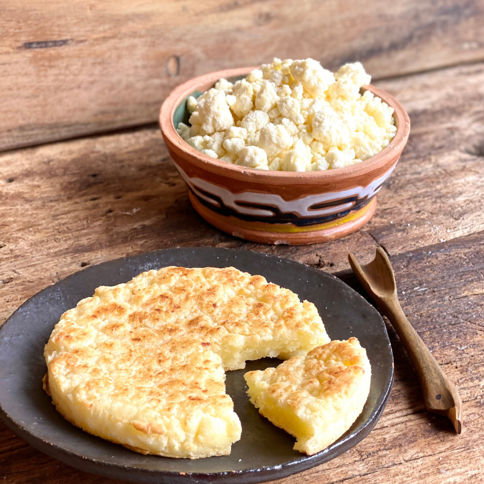

Mbeju

Description
The Mbeju is a famous dish from Paraguay which is loved by many people
It is specially eaten in the festivity of San Juan in the winter.
You can eat it warm with coffee or the also famous drink cocido
Ingredients
- 500 grams of cassava starch or bitter cassava.
- 250 grams of creamy medium cured cheese
- 200 grams of butter or margarine
- 1 pinch of salt
Preparation
- To prepare this Paraguayan mbejú recipe, start with the base: cassava starch. Pour it into a bowl along with the salt and mix well.
- Now, add the cheese. Ideally, it should be a creamy cheese, not too fresh, but not too mature.
- Finally, add the fat. Generally, butter is used, but you can use margarine.
- Mix well between your hands to achieve a texture of sand that is not too fine. In fact, it should form small balls more or less large. Remember, it should not look like dough, the mixture is ready when it has that texture that we see in the photo.
- Grease a frying pan a little bit, just to avoid sticking, and spread a portion of the mixture when it is very hot.
- Be careful not to squash the mixture against the pan. Just seal the edges of the mbejú with a spoon or flat knife.
- To flip, place a large plate in the pan to transfer the tortilla so that the cooked side is facing up.
- Now drop it carefully into the pan to cook it on the other side. When ready, keep warm and serve with mate, coffee, tea or hot milk.